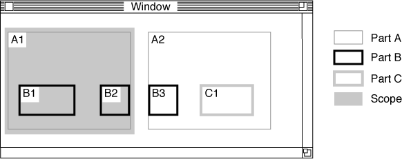
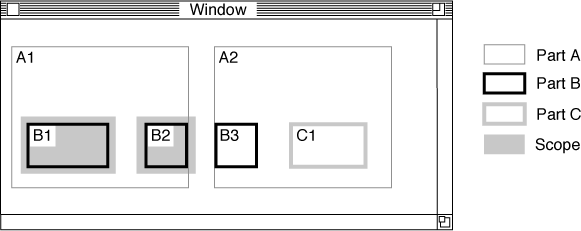
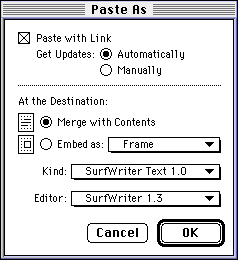
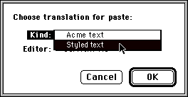

Storage Issues for Data Transfer
This section introduces some of the storage-related concepts used in clipboard transfer, drag and drop, and linking, which are described in the remaining sections of this chapter.For the purposes of this section, the term data-transfer object means any of the following: the clipboard or drag-and-drop object (when reading or writing data), a link-source object (when writing linked data), or a link object (when reading linked data).
Data Configuration
When a part places data on the clipboard or other data-transfer object, it writes a portion or all of its intrinsic content to the data-transfer object, and it also can cause the contents of one or more embedded parts to be written.Whatever the nature of the data, once it is written to the data-transfer object it can be considered an independent part. It has its own intrinsic content and it may contain embedded parts. In writing or reading the data, your part is directly concerned only with the characteristics (such as part kind) of the intrinsic content that is transferred. Any embedded parts are transferred unchanged--as embedded parts--during the process.
The storage unit that holds the data-transfer object's intrinsic content is called its content storage unit. It is equivalent to a part's main storage unit (see "Main and Auxiliary Storage Units"). Any embedded parts in the transferred data, and any other OpenDoc objects, have their own storage units.
More specifically, the data-transfer object's intrinsic content is stored in the contents property (type
- Note
- A link object or a link-source object is a persistent object, and as such has its own main storage unit. That storage unit is not the same as its content storage unit. Always access the content of a data-transfer object by calling its
GetContentStorageUnitmethod.kODPropContents) of the content storage unit. When writing to a data-transfer object, your part can store data in multiple formats in different values of the contents property. As with any part, each value in the contents property must be complete; it must not depend on other properties or other values of the property.Your part accesses other properties besides the contents property in a data-
transfer object. For example, when your part writes data to a data-transfer object, it may also write--into a separate property--a frame object or a frame shape for the destination part to use when constructing a display frame. See "Annotations" (next) for more information.Objects in memory take precedence over their stored versions in data transfer. If the user cuts or copies a part's frame to the clipboard or other data-transfer object, the moved data represents the current state of the part, including any edits that have not yet been saved to disk.
Annotations
This section discusses the items, in addition to part content, that you can write to or read from the storage unit of a data-transfer object.Link Specification
When copying content to the clipboard or drag-and-drop object, a part advertises its ability to create a link by writing a link specification in addition to content. When you copy data to the clipboard or drag-and-drop object, you should create a link specification--using your draft'sCreateLinkSpecmethod--in case the user chooses to link to the data when pasting or dropping it in the destination. The sections "Writing Intrinsic Content" specify when you should write a link specification.Write the link specification onto the content storage unit of the clipboard or drag-and-drop object as a property with the name
kODPropLinkSpec. The data in a link specification is private to the part writing it. The data you place in your link specification is returned to your part if and when your part'sCreateLinkmethod is called to create the link. All that your part needs from the link specification data is sufficient information to identify the selected content.Because the link specification is valid only for the duration of the current instantiation of your part, the link specification can contain pointers to information that you maintain.
Link specifications are not necessary in the following situations:
When you write a link specification to the clipboard, obtain and save the clipboard update ID (see "Clipboard Update ID"(You never need to remove a link specification from the drag-and-
- when you place content on the clipboard as a result of a cut operation. You cannot link data that is no longer in your part. (Because you cannot know at the start whether a drag will be a move or a copy, you should always write a link specification when you write data to the drag-and-drop object.)
- when you write all or a portion of a link destination (or any of your part's content, if your part itself is in a link destination) to the clipboard or drag-
and-drop object. Creating a link in that situation could make your link destination the source of another link. That configuration is technically possible but generally bad practice. (See Table 8-4 for an explanation.)- when your draft permissions are read-only (see "Drafts"). You would not be able to establish links to other parts of the same (read-only) document, and any links to other documents would be broken when your draft closed.
- when you are writing to a link-source object. Link specifications are for the clipboard or drag-and-drop object only. Link specifications are transitory, whereas links are persistent.
drop object, because it is valid only during the course of a single drag operation.)
- Note
- The
kODPropLinkSpecproperty is not copied when the storage unit containing it is cloned.Frame Shape or Frame Annotation
When you place intrinsic content (with or without embedded frames) on the clipboard or other data-transfer object, there is no frame associated with that content. You should, nevertheless, write a frame shape to the data-transfer object to accompany the content; the shape is a suggestion to any part that reads the data and must embed it as a separate part. You write the frame shape into a property namedkODPropSuggestedFrameShapein the data-transfer object's content storage unit.Likewise, if your part receives a paste or drop from the data-transfer object and embeds the intrinsic data, your part should examine the
kODPropSuggestedFrameShapeproperty to get the source part's suggested frame shape for the data. If thekODPropSuggestedFrameShapeproperty does not exist, use your own part-specific default shape.If you place one of your embedded parts (in the form of a single embedded frame) on the clipboard or other data-transfer object, you must place the frame object there also. You write the frame into a property with the name
kODPropContentFramein a storage unit of the data-transfer object's draft.Likewise, if your part receives a paste or drop from the data-transfer object, you can note from the presence of the
kODPropContentFrameproperty that the data represents a single frame that should be embedded (according to the guidelines presented in "Embedding Transferred Data"When you transfer a single embedded frame, you can specify the frame location relative to your part's content (that is, the offset specified in the external transform of the frame's facet) by incorporating the offset into the frame shape that you write. Then, the receiving part of the paste or drop can, if appropriate to its content model, use that offset to construct an external transform.
- Note
- Neither the
kODPropSuggestedFrameShapenor thekODPropContentFrameproperty is copied when the storage unit containing it is cloned.Proxy Content
When you write a single embedded frame to a data-transfer object, you can optionally write any intrinsic data that you want to associate with the frame. The intrinsic data might be a drop shadow or other visual adornment for the frame, or it might be information needed to reconstruct the frame as a link source or link destination.This information is called proxy content. To write it, you add a property (of type
kODPropProxyContents) to the data-transfer object and write your data into it as a value that your part recognizes. If the transferred part is subsequently embedded into a part that also recognizes that value and knows how to interpret it, the added frame characteristics can be duplicated.Likewise, if your part receives a paste or drop and embeds the single part, you can note from the presence of the
kODPropProxyContentsproperty that proxy content for that frame exists. If your part understands the format of the proxy content--which you should be able to determine by examining the value types in the property--you can read it and duplicate the frame characteristics.
- Note
- The
kODPropProxyContentsproperty is not copied when the storage unit containing it is cloned.Cloning-Kind Annotation
When a single embedded part is written to a data-transfer object, its containing part writes a property with the namekODPropCloneKindUsedto the data-transfer object. The property specifies the kind of cloning transaction used to clone the embedded part. The embedded part, if it writes a promise instead of actual data to the data-transfer object, uses the information in thekODPropCloneKindUsedproperty when it later fulfills the promise.For more information, see "Writing a Single Embedded Part".
- Note
- A part may also create a
kODPropCloneKindUsedproperty when promising intrinsic content; see "Writing Intrinsic Content".
Mouse-Down Offset Annotation
If your part initiates a drag operation (see "Initiating a Drag"kODPropMouseDownOffset in the drag-and-drop object's storage unit. Write into that property a value that specifies the location of the mouse-down event that triggered the drag. The value should be of typeODPointand should contain the offset from the origin of the content being dragged. (On the Mac OS, the origin of any shape is its upper-left corner.)If your part receives a drop, it should likewise check for the presence of the
kODPropMouseDownOffsetproperty. If the property exists, and if taking it into account is consistent with your part's content model, use it to locate the dropped content in relation to the mouse-up event that marks the drop.
- Note
- The
kODPropMouseDownOffsetproperty is not copied when the storage unit containing it is cloned.Clonable Data Annotation Prefix
In some situations an entity may need to store properties in the storage unit of a part or other object without the knowledge or cooperation of the part itself. For example, a service such as a spelling checker might store a dictionary of exceptions as a property of a part's storage unit. The part is unaware of the existence of that property, but the spelling checker would want the dictionary cloned whenever the part is cloned.When a storage unit itself is cloned (see "Cloning," next), all its properties are copied, no matter who wrote them into the storage unit. However, the in-memory version of an object is given preference over its storage unit during cloning, because recent, unsaved changes to the object should be included in the cloning operation. Unfortunately, when an in-memory object clones itself, any of its properties that the object itself is unaware of are not cloned, because it does not know to write them into the destination storage unit.
To get around this difficulty, OpenDoc defines the property prefix constant
kODPropPreAnnotation, whose value is the OpenDoc ISO prefix plus "OpenDoc:Annotation:". When the property prefix constant is part of a property name (such as, for example, the OpenDoc ISO prefix plus "OpenDoc:Annotation:Exceptions") in an object's storage unit, OpenDoc always copies that property when the object is cloned, even if the object being cloned is in memory and regardless of whether the object is aware of the existence of the property.Therefore, if you store data in another object that the object itself does not use but that you want to be cloned along with the object, make sure you store it in a property whose name starts with the string defined by
kODPropPreAnnotation.Cloning
You should always transfer data to and from the clipboard or other data-
transfer object in the context of cloning. This section describes how cloning works, what the scope of a cloning operation is, and how to implement your part editor'sCloneIntomethod.To clone an object is to copy the object itself as well as the objects that it references, plus any objects that those objects reference, and so on. Typically, copies are made of all storage units--or their equivalent, instantiated persistent objects--that are referenced with strong persistent references, starting with the object being cloned. Storage units referenced only with weak persistent references are not copied. See the section "Persistent References" for more information on how strong and weak persistent references affect cloning.
Actually, each object that is cloned during the operation decides--if it is in memory at the time--which of its own storage unit's properties and which of its referenced objects should be included. If the object is not currently instantiated, all of its storage unit's properties and all of its strongly referenced objects are copied.
The Cloning Sequence
All persistent objects have aCloneIntomethod by which they clone themselves, but your part editor should not call theCloneIntomethod of any object directly. Instead, you clone an object by calling theClone(orWeakClone) method of its draft object. TheClonemethod in turn calls theCloneIntomethod of the object involved. (Your parts, as persistent objects, must provide
aCloneIntomethod. See "The CloneInto Method of Your Part Editor" for more information.)Cloning is a multistep transaction, designed so that it can be terminated cleanly if it fails at any point. You perform a clone by calling the following three methods, in order.
BeginClone
First, call theBeginClonemethod of the draft object of the data to be cloned. If you are transferring data from your part, call your part's draft object; if you are transferring data from a data-transfer object, call that object's draft object.BeginClonesets up the cloning transaction.If you are cloning because your part is receiving a paste or drop, you must also specify the destination frame, the display frame of your part that is receiving the paste or drop.
When you call
BeginClone, you are returned a draft key, a number that identifies that specific cloning transaction. You pass that key to the other cloning methods that you call during the transaction. You also specify (in thekindparameter to theBeginClonemethod) the kind of transaction to be performed, so that OpenDoc can maintain the proper behavior for linked data being transferred. Table 8-1 lists the kinds of cloning transactions that OpenDoc recognizes. The section "Transfer Rules for Links and Link Sources" explains how these different types of transactions result in different behavior for links.Even when transferring only intrinsic content (and not actually cloning any objects), you should still bracket your transfer with calls to
BeginCloneandEndClone. That way, you notify OpenDoc of the kind of operation (such as cut or copy) that is being performed, and you ensure that the right actions occur at both the source and destination of the transfer.
- IMPORTANT
- When performing a drop, a part must use the clone kind
kODCloneDropCopyorkODCloneDropMovein its call toBeginClone. It should not use the clipboard clone kindkODClonePaste. The drag attributes determine which clone kind to use.Clone
For each object that you are cloning, call the draft'sClonemethod.Cloneallows the draft object to specify and recursively locate all objects to be cloned. It calls theCloneIntomethod of the object to be copied, which results in calls to theCloneIntomethods of all referenced objects, and so on. For example, whenClonecalls theCloneIntomethod of a part, the part clones its embedded frames; the embedded frames in turn clone the parts they display, and so on.(You sometimes call the draft's
WeakClonemethod instead ofClone, especially when you are cloning within the context of your ownCloneIntomethod. See "The CloneInto Method of Your Part Editor" for more information.)Take these steps when calling the
Clonemethod:In cloning, the in-memory version of an object takes precedence over its stored version. For this reason, an object does not need to be written to storage prior to being cloned. If the object is in memory, its
- First, obtain an object ID to pass to
Clone.
- If you are cloning from a data-transfer object into your draft, make sure that the object you are cloning is valid. Starting with the persistent reference that specifies the object to be cloned, call the
IsValidStorageUnitRefmethod of the storage unit or storage-unit view that contains the persistent reference. Never assume that a persistent reference is valid.Then, get the object's ID (see "Storage-Unit IDs"GetIDFromStorageUnitRef method of the storage unit.
- If you are cloning from your draft into a data-transfer object, your access to the objects to be cloned may be through object references instead of persistent references. In that case, get an object ID by calling the referenced object's
GetIDmethod.- Pass the object ID to the
Clonemethod.- Save the resulting object ID that
Clonereturns, along with the IDs returned from other calls toClone, until cloning is complete and you have calledEndClone. (See "EndClone," next.)(If you are not actually cloning objects but simply reading or writing intrinsic data, this is the point at which to read or write, instead of calling
Clone.)CloneIntomethod is called to perform the clone; if the object is not in memory, its storage unit performs the clone operation.This convention also means that, if an object is in memory, properties attached to its storage unit that the object itself does not know about might not be copied, unless they are specially named. See "Clonable Data Annotation Prefix" for an explanation.
- Null IDs when cloning links
- The
Clonemethod returns a value ofkODNullIDif the desired object cannot be cloned. For example,Clonedoes not allow you to clone a link object or link-source object into a link, and it returnskODNullIDif you attempt to do so. In this case, because you cannot clone the object, you should delete any data associated with it that you have written into the data-transfer object. However, in the case of a link or link source, you should still write the content formerly associated with the object, but as unlinked content.- Annotation properties not cloned
- When data is cloned from a data-transfer object, most of the annotation properties (such as
kODPropLinkSpec) that the source part may have added to the content storage unit are not transferred, because they make no sense as properties outside of the data-transfer object. If you clone a storage unit from a data-transfer object and need these properties, you must read them from the data-transfer object's storage unit, not from the cloned storage unit.EndClone
Finally, call the draft'sEndClonemethod.EndClonecommits to and actually performs the cloning operation. AfterEndClonecompletes, you can then use or reconnect the cloned objects.If, at any time after calling
- Pass each returned object ID that you have saved to your draft's
IsValidIDmethod to determine if the object was cloned.- If
IsValidIDreturns true, you can at this point reconstruct either the cloned object in memory or a persistent reference to it:
- If you are cloning from a data-transfer object into your draft and
IsValidIDreturns true, call your draft'sAcquireObjectmethod to read in the object and obtain a reference to it.- If you are cloning from your draft into a data-transfer object and if
IsValidIDreturns true, call theGetStrongStorageUnitReforGetWeakStorageUnitRefmethod of the cloned storage unit, as appropriate. Store the persistent reference in the appropriate location in the contents property of the cloned storage unit.- If
IsValidIDreturns false, the object was not cloned and you should exclude it from the data you are reading or writing.BeginClone, the operation cannot be completed, you can terminate the transaction by calling theAbortClonemethod instead
ofEndClone.
- IMPORTANT
- You cannot instantiate and use any cloned object until the entire cloning operation is complete. If you are cloning several parts and link objects, for example, you cannot call
AcquirePartorAcquireLinkuntil you have cloned all of the objects andEndClonehas successfully returned.
The Scope of a Clone Operation
For cloning, the scope defines the set of objects that are to be included in the cloning operation. Scope is expressed in terms of a frame object or its storage unit.Because a part can have more than one display frame and because each frame can include a separate set of embedded frames and parts, it is important to specify the frame whose enclosed objects are to be cloned. Otherwise, extra embedded parts or other objects not needed by the copy may be included unnecessarily. (You can specify null for the scope of a clone if you want all objects copied, regardless of what display frame they are associated with.)
In the example shown in Figure 8-1, the user has selected some content in the root part that includes display frame 1 of embedded part A. The root part writes its intrinsic content and then clones part A, passing it a scope of frame A1. Any content that belongs only to frame A2 (such as part C) is not included in the clone.

Scope changes during the course of a clone. Continuing the example shown in Figure 8-1, Figure 8-2 demonstrates how part A clones itself in the context of the scope (frame A1) specified by the root part. Part A writes the intrinsic content of its display frame A1 and then clones part B twice, first passing it a scope of frame B1 and then a scope of frame B2. Part B thus gets called to clone itself twice, with different scopes. Any content of B within frames B1 and B2 is included, but any content that belongs only to frame B3 is not.Figure 8-2 Change in scope as more deeply embedded parts are cloned

The CloneInto Method of Your Part Editor
If your part is an embedded part that is written to the clipboard (or other data-transfer object), your part's override of its inheritedCloneIntomethod is called by your draft'sClonemethod. This is the interface toCloneInto:void CloneInto(in ODDraftKey key, in ODStorageUnit toSU, in ODFrame scope);YourCloneIntomethod is passed a draft key for the clone operation and a frame that defines the scope of the cloning. The method should write your part's intrinsic content to the provided storage unit, and it should clone in turn any objects (such as embedded frames or auxiliary storage units) that it references. It needn't clone any objects or write any data that is outside the scope.To support efficient data transfer, your part should, if possible, write a promise (see "Promises") instead of writing its actual intrinsic data when
- Note
- Do not implement your
CloneIntomethod by writing your part to storage and then cloning your storage unit. Doing so would levy performance penalties because of the extra time needed to store your data. Also, it could result in the copying of unneeded objects because the scope of the clone would be ignored.CloneIntois called. It is possible to write a promise only when your part is placed into the data-transfer object as a single, stand-alone frame with no surrounding intrinsic content of its containing part. In any other situation, yourCloneIntomethod might have been called to help fulfill a promise, in which case writing a promise would be inappropriate.You can determine whether you can write a promise by examining the provided storage unit. If it contains a property with the name
kODPropContentFrame, your part alone is stored in the storage unit's contents property, and you can write a promise instead of actual data.When you write a promise, be sure to identify (to yourself) the display frame or frames of your part that are within the scope of the clone operation, so that your
FulfillPromisemethod can write the proper content when it is called.Take these general steps in your
CloneIntomethod:
- Check whether your part has already been cloned in this operation. Because an object can be referenced more than once, its
CloneIntomethod can be called more than once in a single cloning operation. In general, if a contents property already exists in the storage unit passed in the method, your part has already been cloned and there is no need to repeat the process.An exception to this rule occurs when scope is significant. If your part is called to clone itself with different scopes during the same operation (see, for example, Figure 8-2), it may have to write additional data each time its
CloneIntomethod is called.- Call your inherited
CloneIntomethod.- If it does not already exist, add a property named
kODPropContentsto the provided storage unit.(You do not have to call
BeginClone; that method will already have been called. Also, you do not have to add properties other than the contents property; OpenDoc will add your part's name and any other needed annotations.)- Check whether you can write a promise. Look for a property with the name
kODPropContentFramein the storage unit. (It is not required that any value yet exist in the property; the caller of yourCloneIntomethod may write the value after cloning completes.)- Focus on the contents property, and write a value for each part kind you support. Either write a promise or the data of your part itself, using either the storage unit's
SetPromiseValueorSetValuemethod, respectively.(For data transfer, it is especially important to write a standard format in addition to your own native part kind, because the ultimate destination of the transferred data is unknown.)
- Clone all objects that your part references (and that are within the scope of the cloning operation), as follows:
- For each object to which your part has a strong persistent reference, call your draft's
Clonemethod to clone the object, passing the same draft key that was passed to yourCloneIntomethod. Pass a new scope, if appropriate; for example, if you are cloning an embedded frame (and thus its part), that frame is the new scope.- For each object to which your part has a weak persistent reference, call your draft's
WeakClonemethod, passing the appropriate draft key and scope.(Calling
WeakClonedoes not by itself cause an object to be copied; it only ensures that, if the object ends up being copied because of an existing strong persistent reference to it, your part's weak persistent reference will be maintained across the cloning operation.)The ClonePartInfo Method of Your Part Editor
Whenever your part's display frame is cloned during data transfer, the frame calls your part'sClonePartInfomethod.void ClonePartInfo(in ODDraftKey key, in ODInfoType partInfo, in ODStorageUnitView storageUnitView, in ODFrame scope);You should respond to this method call by writing your part info into the provided storage-unit view (regardless of the state of your part-info dirty flag) and cloning any objects referenced in your part info data.Promises
Clipboard transfer, drag and drop, and linking can all make use of promises. A promise is a specification of data to be transferred at a future time. If a data transfer involves a very large amount of data, the source part can choose to write a promise instead of actually writing the data to a storage unit. When another part retrieves the data, the source part must then fulfill the promise. The destination part does not know that a promise is being fulfilled; it simply accepts the data as usual.The format of a promise is completely determined by the source part. The only restriction is that the promise must be able to be written to a storage-unit value.
You are encouraged to write promises in place of actual data in most cases; it minimizes memory requirements and increases performance.
Writing a Promise
Your part can follow these steps to write a promise when it is the source of a data transfer--that is, when it responds to a mouse-down event that initiates a drag, or when it copies data to the clipboard, or when it updates a link source.Each promise you write is for a single part kind. You can write several promises representing data of several kinds, so that the destination part has a better chance of being able to incorporate the data instead of embedding it. (Because promises are private data, the actual content of all of your promises can be the same, regardless of the part kind being promised. When you are called to fulfill the promise, you can inspect the provided storage-unit view object to find out which part kind is needed.)
- Gain access to the content storage unit of the data-transfer object. See, for example, the initial steps in "Copying or Cutting to the Clipboard". Focus the storage unit on the contents property (
kODPropContents).- Prepare your promise. It can have any content and format you decide; you must be able to read it later and reconstruct the exact data that is to be transferred.
- Write the promise into a single value of the storage unit, using the storage unit's
SetPromiseValuemethod. Your promise must include at least this information:
- A specification of the actual content that is to be delivered later.
- A specification of the display frame (or frames) of your part involved in the data transfer. When you fulfill the promise, you can then supply the proper scope for the cloning operation.
- A specification of the proper kind of cloning transaction (such as
kODCloneCopyorkODCloneCut) to apply when you fulfill the promise.- Write other needed information. You needn't at this stage clone any frames or read any actual content into the data-transfer object. However, you should--as usual--create a link specification, obtain an update ID, write a suggested frame shape, and so on, as described in "Writing Intrinsic Content".
Because a promise is valid only for the duration of the current instantiation of your part, the promise can contain pointers to information that you maintain.
Getting Data From a Value Containing a Promise
When theDropmethod of a destination part retrieves the data from a drop, or when a destination part reads data from the clipboard (using theGetValueorGetSizemethod of the dragged data's or clipboard's storage unit), the source part is called to fulfill the promise. The destination part does not even know that a promise is being fulfilled; it follows the procedures described in the section "Reading From a Data-Transfer Object" and uses the same code whether the value contains a promise or not.Fulfilling a Promise
OpenDoc calls your source part'sFulfillPromisemethod when a promise must be fulfilled, passing it a storage-unit view object that contains the data of the promise. This is its interface:void FulfillPromise(in ODStorageUnitView promiseSUView);In your implementation of the method, take steps similar to these:When your
- Examine the private information that you wrote into the promise earlier, to determine what data to write.
- Look for a property named
kODPropCloneKindUsedin the storage-unit view passed to you. Your containing part may have placed the property there if your part was being cloned as a single embedded frame when your part wrote the promise, or your part might have placed it there if your part promised intrinsic content. If the property exists, it contains a value of typekODCloneKindthat specifies the kind of cloning transaction (such askODCloneCopyorkODCloneCut) that you must use in fulfilling the promise.If the property does not exist, use information that you saved when you wrote the promise to determine the kind of cloning transaction to use.
- Begin a cloning operation (call to
BeginClone).- Retrieve the actual data that the promise represents and reset the current offset of the storage-unit view to 0. Setting the current offset to 0 ensures that the actual promise data is overwritten.
- Write the actual data into the provided storage-unit view object, following the steps described in "The Cloning Sequence". You can clone frames and other objects as usual at this time.
- End the cloning operation (call
EndClone).FulfillPromisemethod completes, the destination part receives the data.When you fulfill a promise, be sure to supply the source content that was selected at the time the promise was written, even if that content no longer exists in your part.
If fulfilling your promise requires cloning, you must specify the scope and the appropriate kind of cloning transaction. If you have saved that information in the promise itself, extract it and pass it to your draft's
BeginCloneandClonemethods, respectively.At some times your part may have to fulfill a promise on its own, without its
FulfillPromisemethod having been called. For example, when your part closes, your part'sReleaseAllmethod (see "Closing Your Part") must fulfill all outstanding promises. To fulfill a promise in that manner, your part must always keep a record of the promises (and their update IDs) that it has written. Then, inReleaseAll, it canYou can also force fulfillment of one of your promises by focusing on the promised value and calling the
- access the clipboard content storage unit and verify the clipboard update ID against the part's stored update ID
- access each value that it has written and verify that it is a promise by calling the storage unit's
IsPromiseValuemethod- extract the promise from the value, fulfill it, and write the fulfilled data back into the value
GetSizemethod of its storage unit. That causes yourFulFillPromisemethod to be called immediately.Translation
The OpenDoc translation object, implemented on each platform as a subclass ofODTranslation, is a wrapper for platform-specific translation services. OpenDoc and part editors can use the translation object to convert part data from one format (part kind) to another.Through the translation object, OpenDoc maintains information on what kinds of translations are available on the user's system. OpenDoc and part editors can then use the translation object to perform any requested translations, rather than directly calling the platform-specific translation service.
Translation should generally occur only with explicit user approval and instruction. OpenDoc initiates translation in the situations described in the section "Binding With Translation". Your part editor can initiate translation in these situations:
The user specifies the specific translation to perform by selecting a new part kind in the kind pop-up menu (see Figure 8-4) of the Paste As dialog box.
- When embedding or incorporating parts through clipboard paste or through drag and drop, your part editor performs translation if the user specifies--in the Paste As dialog box--a part kind that requires translation. See the section "Handling the Paste As Dialog Box" for more information.
- Your part editor performs translation when updating a link destination for which the user specified translation in the Paste As dialog box when originally creating the link.
To set up the information in the pop-up menu, OpenDoc examines each part kind in the part and determines, from the translation object, the new part kinds (supported by available editors) to which the original part kind can be translated. OpenDoc then presents those choices to the user.
Once the user selects a part kind, your part editor calls the translation object to perform the translation. It is possible for the user to request translation to a part kind that your part editor cannot read. In such a case, you perform the translation but embed the data as a part, and another editor (also chosen by the user) is then bound to the data that you have translated.
The translation object allows only one-step translation; conversion can be only from the existing part kind directly to the part kind selected by the user. Note also that translation applies only to the outermost (intrinsic) portion of the data; parts embedded within it are not translated.
For detailed procedures to follow in translating transferred data, see "Translating Before Incorporating or Embedding"
- Converting between part kinds and Mac OS file types
- The translation object provides some services in addition to translation. For example, suppose you have part
data expressed as a Mac OS file type and you need to express it as a part kind (ISO string). You can use theGetISOTypeFromPlatformTypemethod of the translation object to find out if there is a part kind equivalent to that file type. To convert in the opposite direction, you can use theGetPlatformTypeFromISOTypemethod instead.Handling Cut Data
The user can remove data from your part by selecting the Cut command or by using drag and drop to move (rather than copy) data from your part into another part. In this event, you need to take extra steps to account for the fact that the data is still valid but is no longer in your part, and also to allow the action to be undone. Keep these points in mind:
- Cutting must be an undoable action. If the data cut from your part includes references to objects such as embedded frames or link objects, you should retain those references in an undo action; see "Adding an Action to the Undo Action History".
Once the objects are no longer needed for undo support, OpenDoc calls your
DisposeActionStatemethod. You should then either release them entirely or remove them from your draft, depending on whether other valid references to them remain. (Follow the guidelines listed in Table 6-4 for related information.- When you cut an embedded frame to a data-transfer object, call the
SetContainingFramemethod of the cut frame, setting its containing frame to null and severing it from your part's embedding hierarchy.- Remove the facets of the cut frame. To access the facets of a frame that the user has drag-moved out of your part, use the embedded-facet iterator of your own display facet. For each facet to be removed, call its containing facet's
RemoveFacetmethod and then delete the facet object itself, as described in the section "Removing a Facet".- If you have more than one frame displaying an embedded part, remember that removing the embedded part from one of your display frames does not automatically remove it from the others. If the removed frame is synchronized with embedded frames in your other display frames, for example, you must remove those embedded frames also.
- Do not create a link specification for the data you have cut; the data no longer belongs to your part.
- If the data you cut to the data-transfer object includes a link source, you must call the
SetSourcePartmethod of the link source object in your own draft, passing it a null value. That action relinquishes your part's ownership of the link source (except that you retain a reference to it in your undo data). Even if you write a promise instead of actual data, callSetSourcePartat this time; don't wait until the promise must be fulfilled.- If you write a promise to the clipboard when cutting data from your part, you can later fulfill that promise using either a
kODCloneCutorkODCloneCopytransaction (unless the storage-unit view contains akODPropCloneKindUsedproperty; see "Fulfilling a Promise"). You have this flexibility because the same promise may need to be fulfilled during a paste immediately following the cut or during subsequent pastes that do not follow the cut. Therefore, you must take all cut-specific actions at the time you write the promise (or, if the cut is undone, when you handle the undo action).- If you have cut data from your part and cloned it to the clipboard or drag-
and-drop object, OpenDoc may use the actual objects that were cut from your draft--not clones of them--when providing the data to be pasted or dropped into a destination. Therefore, it is important to release, rather than delete, objects (embedded frames, links, and so on) that you cut from your part. Likewise, if you paste data into your part and then the user selects Undo, make sure that you release rather than delete the objects that you remove in the course of reversing the paste operation.Handling Pasted or Dropped Data
When data is pasted or dropped into a part, the part receiving the data can either embed the data as a separate part or incorporate the data as intrinsic content. The part may also in some circumstances translate the data, or it might even refuse to accept the pasted data.This section discusses how OpenDoc and your part editor make these decisions, both with and without explicit user intervention. It also discusses when your part editor might explicitly translate data.
Default Conventions
In the absence of other instructions, OpenDoc expects your part to follow these specific conventions when pasting data from the clipboard or when accepting dropped data during a drag-and-drop operation. The conventions are explained further in the user-interface guidelines given in the sections "Incorporating Transferred Data".The destination part should place clipboard data at the insertion point; it should place dropped data at the point where the user releases the mouse button. Note also that a pasted or dropped part takes on the view type that its containing part prefers it to have; see "Preferred View Type for Embedded Parts"
- If the transferred data consists of an arbitrary portion of the source part's intrinsic content--plus possibly one or more embedded parts--the destination part either incorporates or embeds that outer intrinsic content, according to these rules:
- If any of the representations of the outer data are of a part kind directly readable by the destination part editor, the editor should incorporate the outer data into the intrinsic content of the destination part and embed any parts that were embedded in the outer data.
- If none of the representations of the outer data is readable by the destination part editor, the editor should transfer the data as a single part (plus any embedded parts), and embed the part in a frame in the destination.
- If the transferred data represents a single embedded frame that was cut or copied (or dragged), the destination part editor should embed the data as a separate part into the destination part, regardless of whether its part kind is different from or identical to that of the destination.
Handling the Paste As Dialog Box
The Paste As dialog box allows the user to override OpenDoc and specify whether transferred data is to be embedded, incorporated, or translated and then embedded or incorporated. It also allows the user to create a link to the source of the transferred data.When the user chooses the Paste As command in the Edit menu (see "Paste As".
Figure 8-3 The Paste As dialog box

The user can select the following options from the dialog box:Figure 8-4 The Kind pop-up menu in the Paste As dialog box
- Paste with Link. The user can request that a link be created between the source and destination data. This option is not available if no link specifica-
tion accompanies the data to be pasted. Disable this option if your part does not support linking.- Get Updates [of a link] Automatically/Manually. If the user creates a link, the user selects one of these options to specify whether updates are to be automatic or manual. See "Automatic and Manual Updating" for more information.
- Merge with Contents. If the user selects this option, the destination part editor is expected to incorporate the data if at all possible, even if doing so requires translation and great loss of information (such as converting text to a bitmap).
When your part editor displays the dialog box, it can check the part kinds available in the data-transfer object and specify whether this option is enabled and whether it is selected by default. Disable this option if your part cannot incorporate the data even after translation.
- Embed As. If the user selects this option, the source data must be embedded in the destination as a separate part, even if incorporation is possible.
When your part editor displays the dialog box, it can check the part kinds available in the data-transfer object and specify whether this option is enabled and whether it is checked by default. Disable this option if your part does not support embedding.
If the user selects Embed As, the user can also make the following selections:
- Kind [of pasted data]. With this option, the user can override OpenDoc's default pasting decision and explicitly specify a destination part kind from a pop-up menu. If translation to other part kinds is possible, the user can select the Translate To command from the Kind pop-up menu shown in Figure 8-4.
The user can then choose a translated part kind from the Translation for Paste dialog box shown in Figure 8-5.Figure 8-5 The Translation for Paste dialog box

This option (choosing part kind) is not available if the transferred data consists of a single frame that is being moved (not copied) from its original source. The moved frame may not be the only frame displaying its part, and changing its kind would then affect the display in the other parts, which may not be the user's intent.The
- Editor. From the Editor pop-up menu, the user can specify a new editor for the part. Only part editors that can read the currently selected part kind appear in the menu.
- View type. From a pop-up menu, the user can choose the view type the embedded part is to have: frame, large icon, small icon, or thumbnail.
ShowPasteAsDialogmethod returns the user's choices to your part in anODPasteAsResultstructure:struct ODPasteAsResult { ODBoolean pasteLinkSetting; ODBoolean autoUpdateSetting; ODBoolean mergeSetting; ODTypeToken selectedView; ODType selectedKind; ODType translateKind; ODEditor editor; };Depending on the contents of the returned structure, your part either creates a link to its source or does not, either accepts the data as it is or translates it, and either embeds or incorporates the transferred data:
- If the user has chosen to create a link, respond as described in the section "Creating a Link at the Destination". If you create a link, take into account the automatic/manual update setting as well as the other Paste As settings selected by the user.
- If the user has chosen to translate the data but is not creating a link, respond as described in the section "Translating Before Incorporating or Embedding".
- If the user is not creating a link or translating, read the transferred data in either of two ways:
- If your part can directly read any of the part kinds in the data-transfer object's content storage unit, and if the user has not selected Embed As, incorporate the data. Follow the instructions in the section "Incorporating Intrinsic Content".
- If your part cannot directly read any of the part kinds in the storage unit, or if the user has selected Embed As, follow the instructions in the section "Embedding a Single Part"